Dear Customer,
Thank you for purchasing this theme. Please, take time to read this User’s Manual. You can use the navigation to the left in order to cycle thru the chapters of this manual.
If you have any questions that are beyond the scope of this User's Manual file, please feel free to contact us here.
Licensing Terms:
Please be advised, in order to use the theme in a legal manner, you need to purchase a separate license for each domain/multishop store/installation you are going to use the theme on. A single license is limited to a single domain/application/store/installation.
For more information please refer to the Licensing Terms on our website. If you have any questions regarding licensing, please contact us Here.
Video Guides
You can view short video guides on the links below.
Preparation
Before you install this theme, you need to have installation of PrestaShop. If you already installed your PrestaShop, you can skip this step and go directly to installation step.
Compatibility
PrestaShop compatibility: This theme is compatible with PrestaShop version: 1.6.0.6
Browser compatibility: Use at minimum Internet Explorer 9, Firefox 4 or Google Chrome. It is highly recommended to use latest version of your browser.
PrestaShop Requirements
Please make sure your hosting server meets the PrestaShop requirements:
- System: Unix, Linux or Windows. Unix is highly recommended.
- Web server: Apache Web server 1.3 or later, Microsoft's IIS Web server 6.0 or later, and nginx 1.0 or later.
- PHP 5.2 or later.
- MySQL 5.0 or later.
- At least 32 Mb of RAM on your server (64 Mb is comfy, the more the better).
PrestaShop Documentation
You can find full documentation on how to work with PrestaShop CMS at http://doc.prestashop.com/display/PS15/User+Guide.
PrestaShop Installation
1. Download a copy of PrestaShop package at http://www.prestashop.com/en/download.
2. You will need an FTP client, FileZilla is recommended, download it from https://filezilla-project.org/download.php
3. Extract the downloaded PrestaShop files to your local folder, and then upload it to your hosting via the FTP client.
4. Once the files are uploaded, you need to create database on your hosting provider (if you don't know how, ask them to assist you and help you out, this step is very different from hosting to hosting).
5. Open the URL in your browser where you have uploaded the PrestaShop files, for example www.yourdomain.com/prestashop/
6. The install process will begin.
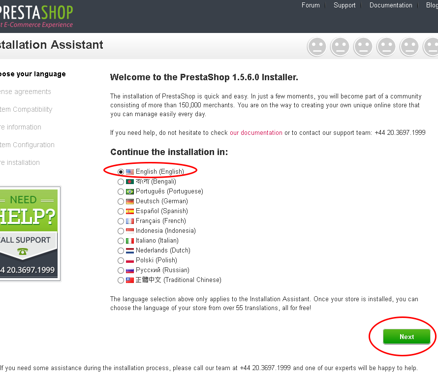
7. Choose your language and click "next".
8. On the next page, click "I agree with the terms" after you read them and click "next".
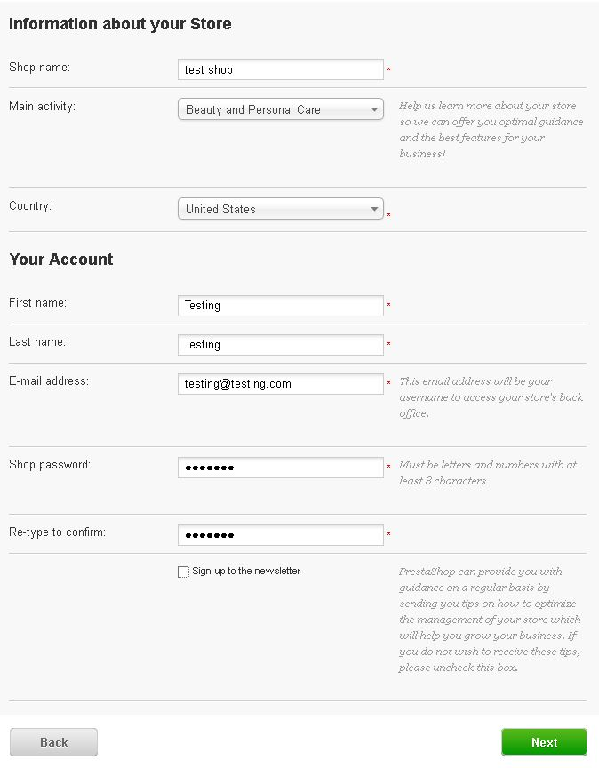
9. Fill the information about your store, your name, and your login information. Click "next" to continue.
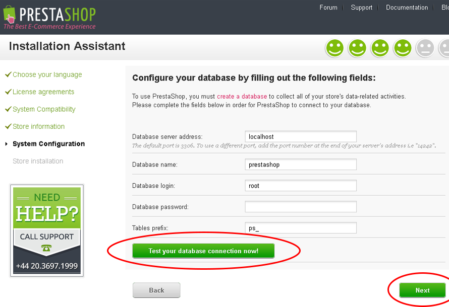
10. Fill the information about the created Database from your server, and click the "test" button, if everything is correct, you will see a success message. If the test failed, check your database information.
11. Wait the install process to finish, and if everything is correct, you need to delete the "install" folder from your FTP folder where you have uploaded the PrestaShop files.
12. Rename the "Admin" folder to something else, for security reasons, and remember the folder name, you will use it to access your PrestaShop admin panel, for example http://www.yourdomain.com/prestashop/adminrenamed/ <- this will be your admin access URL.
That's it! You are now ready to install the theme on it.
Installation
Installation
1. Open your PrestaShop Back Office (admin) and in the menu, go to “Preferences” tab and then "themes".
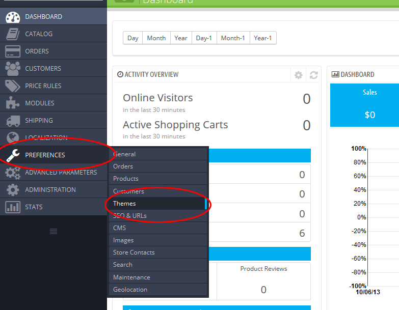
2. In the menu on the right, click "Add new theme". Browse for the theme archive file, and click "Save".
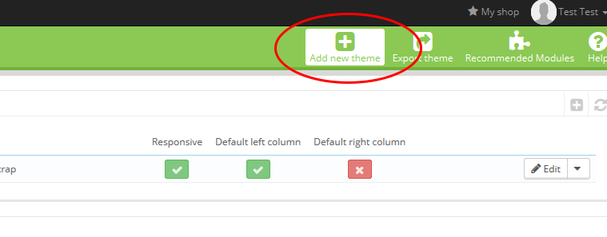
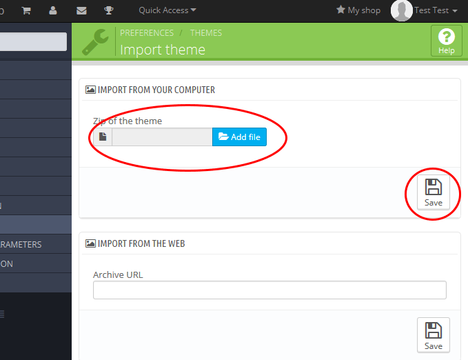
3. Follow the next screen, you should see "Upload successful" and the new theme in the options below. Click on the theme to select it and click "Save". This would begin the second phase of the installation of the theme.
If you get error uploading at this step, make sure that you have file upload limit increased in your PHP settings or proper permissions. For more info see F.A.Q section.
4. On the configuration window, keep the install configuration as shown on the picture and click "Next".
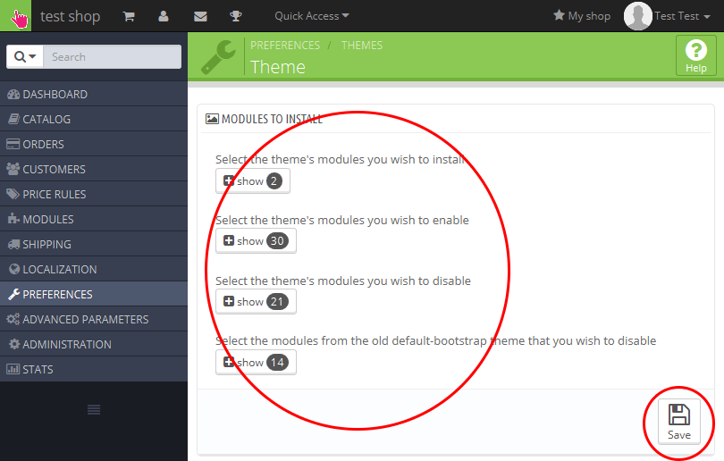
5. On the following screen, you should see theme installation process to finish. Click "Go to the thumbnails regeneration page" button.
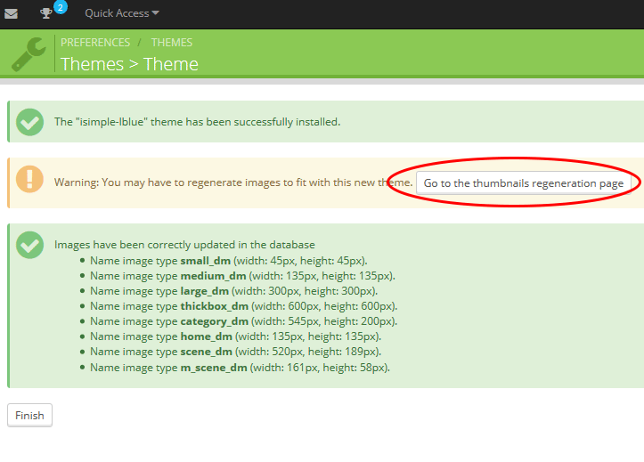
6. On the next page, click the selection of "Use PNG only if the base image is in PNG format.", then click "Save" button. After that in the bottom of the page click "Regenerate Thumbnails" button.
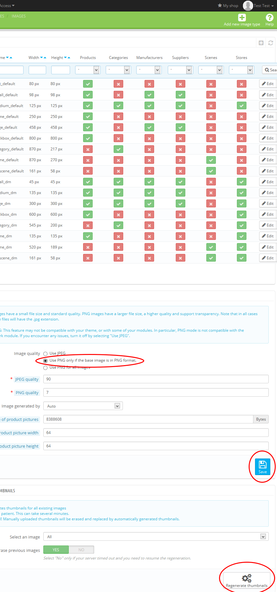
6. That's it, your theme is installed now. You have to configure the theme now. If anything goes wrong during this process see F.A.Q chapter.
Configuration
Uploading your logo
1. To upload your store logo, go to "Preferences" in your PrestaShop admins tab, then go to "Themes", under "Appearance" select and upload your logo files.
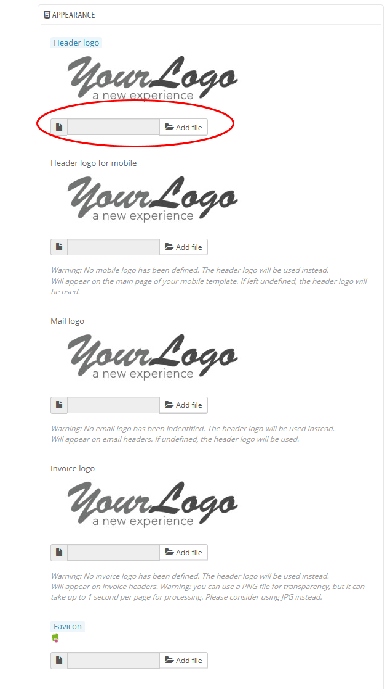
Module positions and exceptions
In order to achive the settings shown on our demo page, you need to configure module positions and exceptions in PrestaShop administration.
1. To do so, go to your PrestaShop Admin, click on "modules" tab, then click on "positions". Scroll down and find "displayLeftColumn".
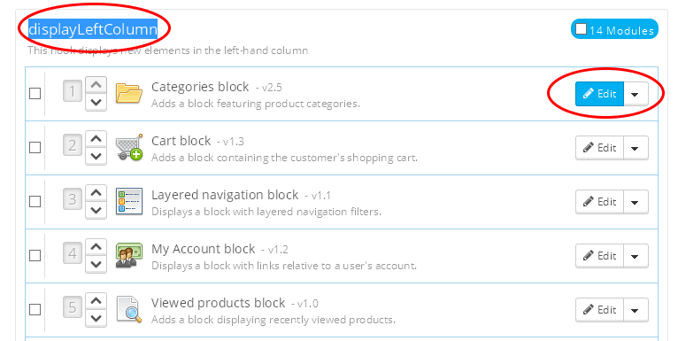
2. To edit exceptions for the "Categories block" for example, click "Edit" button next to the block name. Clear all exceptions as shown on the image below and click "Save" button.
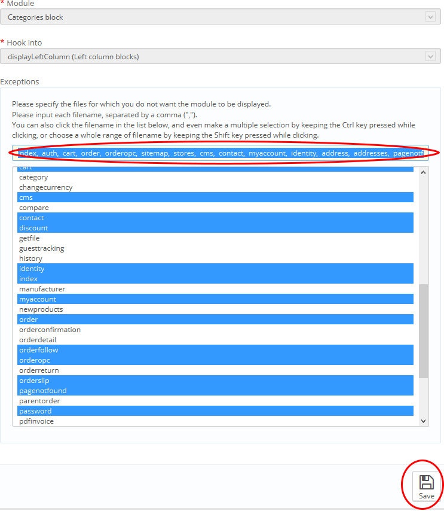
3. Repeat the above steps for each block and configure it in your taste. You can also change every module position as you like.
Changing footer social icons
1. To change the footer links and put your Facebook links or copyright info, go to your theme folder (for example, go to themes/WineShop/ folder) and open the file "footer.tpl" with notepad or any HTML editor that you may have.
2. Go to around line 43 of that file and find this code:
"<a href="http://www.facebook.com"><img src="{$img_dir}/icon/facebook.png" alt="Facebook" id="footer_icons"/></a> "
3. And replace the URL "http://www.facebook.com" with your Facebook link. Repeat this step with the other links. Don't forget "http://" infront of www links.
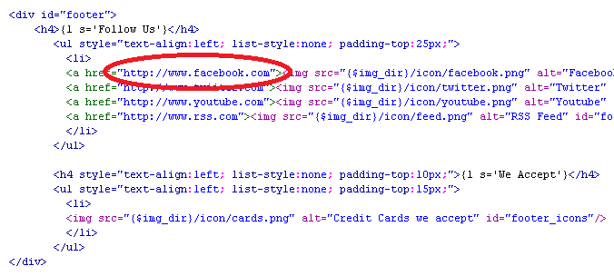
4. Save that file, and reapload it, if you don't see the changes, clear the "PrestaShop cache" under "Advanced Parameters -> Performance" tab.
That's it!, You can now advance to the next chapter - Working with modules.
Working with modules
Working with "DreamSlider" module
In general, the usage with this module is the same as the HomeSlider, native module included in PrestaShop.
1. To configure you Slider module, go to your Admin, click on the "Modules" tab, and in the search field, search for "Slider", select it and under the DreamSlider shown, select "Configure".
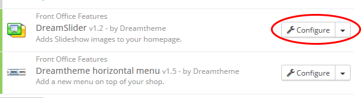
2. To add a new slider image to your slider, click on the "Add new" button in the upper left corner.
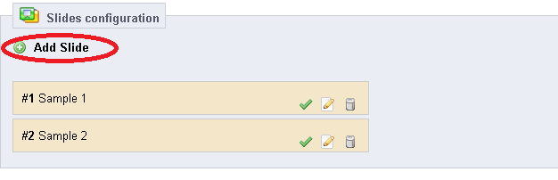
3. Select your desired image and upload it, fill the title, URL,legend and description fields and click "Save".
4. To delete an image from the slider, simply press the "Trash Can" icon. If you want to change the positions, "Drag and Drop" the sliders to the desired position.
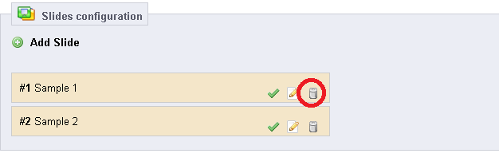
Working with "Featured Products" module
With this module, you can choose how many "featured" products to display on the main page.
1. To do so, go to your Admin, click on the "Modules" tab, and in the search field, search for "Featured", select "Featured Products" and then select "Configure".
2. Select the desired number of products to display and click "save".
Working with "Dreamtheme horizontal menu" module
With "Dreamtheme horizontal menu" module, you can add/remove or customize the links in the navigation panel on your store.
1. To do so, go to your Admin, click on the "Modules" tab, and in the search field, search for "horizontal", select "Dreamtheme horizontal menu" and then select "Configure".
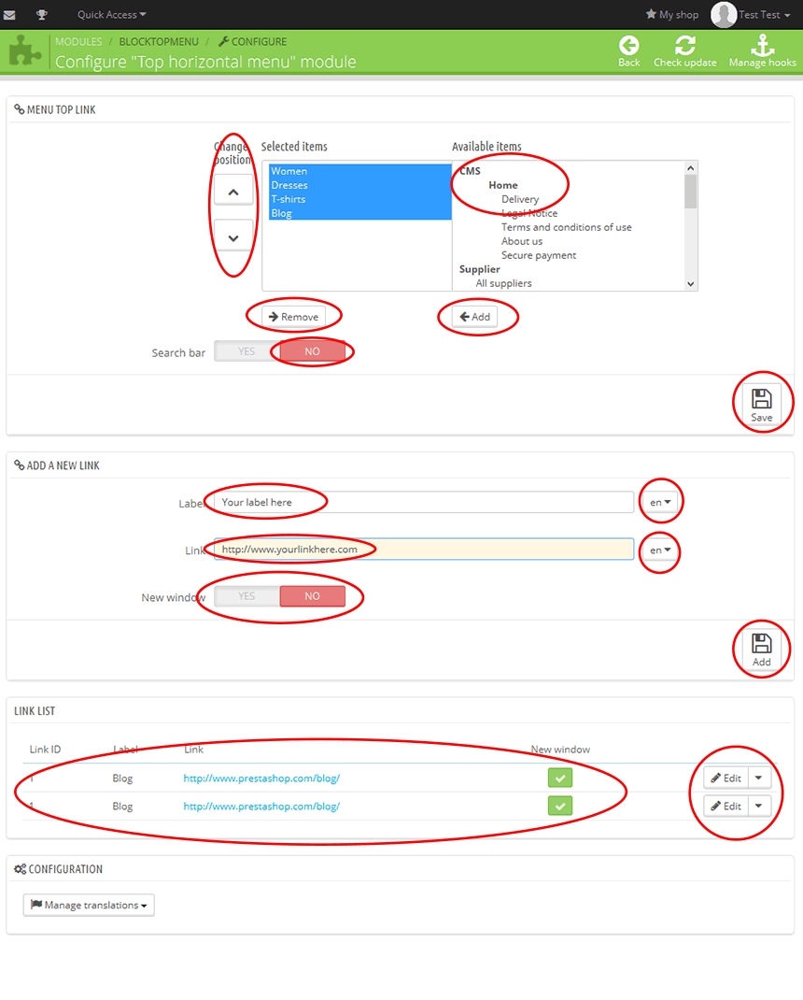
2. In the first part with name "Settings" you can select and add predefined links or categories to the left to make it appear into horizontal navigation. When you done, click "Save" button.
3. In second the "Add Menu Top Link" field, you can add custom links, as shown on the picture. After you create them here you need to add them in the first "Settings" field again.
4. if you don't see the changes, clear the "PrestaShop cache" under "Advanced Parameters -> Performance" tab.
Translating the theme
1. To translate your PrestaShop with particular language, go to your Admin, click on the "Localization" tab, and select "Localization" again in the drop-down menu.
2. In the "Import a localization pack" field, use the drop-down menu to select your desired language, and click "Import" and wait for the process to finish.
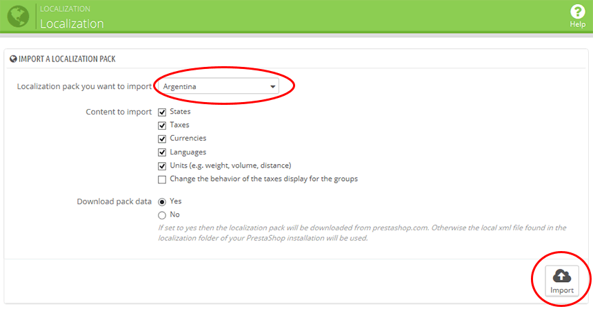
3. You language is now imported directly from PrestaShop translations.
Translating missing fields and modules
In some languages or themes, you may have missing fields or fields that you want to change the translation.
1. To do so, go to your Admin, click on the "Localization" tab, and select "Translations" again in the drop-down menu.
2. Select "Front office Translations" or "Installed modules translations" from the first field, then select the theme you wish to change translations in this case "WineShop" and then click on the flag for the language you wish to change. See picture below:
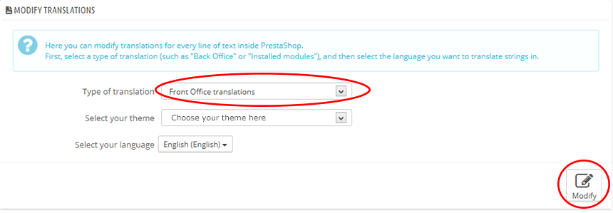
3. Select the module or field that you with to change translations, and fill the fields or change the existing translation. After you are done with editing, click the button "Save".
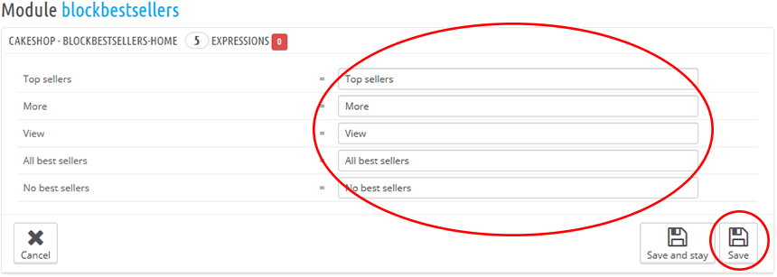
Working with PSD
In the Assets folder of the archive you will find several files, which can help you to customize your store.
2. WineShop.PSD - This is the main PSD file for this theme. If you need to customize the theme you can use it to easy your job.
3. Logo.PSD - with this file you can make logo similiar to the demo page.
5. ButtonsSprites.PSD - with this file you can change easly the color of the theme buttons. You just need to overright the PNG generated with the existing one to change the color.
Frequently Asked Questions
Q. I can’t install the theme via theme installer from PrestaShop, what should i do?
A. This is due to low file upload and max execution permissions in your PHP settings. Contact your hosting provider or edit your php.ini and increase max file upload size to at least 20 MB, and also max execution file size.
Q. I have edited, modified CSS, TPL or other files, and now I have a problem, what should I do?
A. You can reinstall your theme and start your modifications again. However edit your theme on a different installation and not on a live store, when you are satisfied with the result, then apply it on your live store.
Q. I have edited TPL files or some configuration on the store but i don't see the changes, what should i do?
A. If you don't see the changes, your most probably see a cached version of your store. To fix this, to to your Admin, in "Advanced Parameters" tab then select "Performance" tab. Press "Clear smarty cache & Autioload cache" button and set "Template Cache" to "Froce compile" option. After you see your changes return and set template cache again to "Never recompile template files".
A. You may also need to clear your browser cache files.
Q. Will you help me with custom module, or code on my store?
A. No! Our support doesn’t cover user’s customizations or modifications or any 3rd party modules or code.
Q. Will you help me with native PrestaShop modules configuration or how to work with them?
A. No! Our support only covers this theme. PrestaShop has their own support, documentation and forums check them out.
Q. Can I use this theme for my other store or multi-shop store?
A. No! A single license is valid for one store, on one domain only. If you want to use it on multi-shop feature from PrestaShop, you need additional license for every store or installation you open.
Q. PrestaShop has new version, will I get new version of the theme?
A. There is no guarantee that we will update certain theme with the latest PrestaShop version. This depends mainly on the changes in the new versions of the PrestaShop and other factors.
If there is a new version of the theme, you can download it from your dreamtheme.eu/prestashop addons account, or you can contact us at support@dreamtheme.eu providing your order date and name used on the order and we will send to you the new version if available free of charge.
Q. How to uninstall and remove this theme?
A. Go to your PrestaShop administrator, then go to "Modules" tap and uninstall the following modules: DreamSlider, Dream Top Menu. After you uninstall them, you also need to delete them by clicking "delete" button on every one of this modules. After that you also need to delete "WineShop" folder from your PrestaShop installation directory /themes/WineShop.
Q. How to update this theme?
A. Depending on the versions this may vary, however in general, you just need to uninstall your theme first, and then install the new theme again as explain in installation instruction in this manual. To uninstall it, see the above explanation on how to uninstall the theme.
Support and Contacts
Make sure that you have read the install instructions in this User's Manual.
If you followed the steps in the User's Manual exactly and you still have problem, please describe your problem as detailed as you can, for example, what exactly did you do, how did you installed and all information that may help us understand your problem, and fill this information below, and send e-mail to support@dreamtheme.eu
Order date, number, name and store:
Theme installation URL (domain):
How did you install the theme?:
Did you install it on a clean version of PrestaShop?:
Description of the problem and how the problem occurred (be specific):
Screenshots of the problem if available:
Version of your PrestaShop:
Version of your Theme:
Any edits or custom modules that you have made or have:
Other:
Please be advised that we asume that you can work with computers, your hosting provider and PrestaShop. If you need help with any of that seek help beyond this manual.